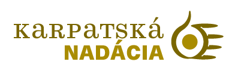

+++
title = "Karpatská nadácia - Finančná manažérka"
slug = "70"
+++
<div class="container">
    <div class="row justify-content-center py-5">
        <div class="col py-5">
            <h1 class="text-center">Pracovná ponuka už nie je aktuálna</h1>
            <p class="text-center"><a href="..">Aktuálne flexibilné pracovné ponuky</a></p>
        </div>
    </div>
</div>
<!--<div class="container mb-5">
    <div class="row justify-content-around">
        <div class="col-6 col-md-2 mt-3">
        </div>
        <div class="col-md-8">
            <h1>Karpatská nadácia</h1>
          <h2>Finančná manažérka</h2>
</h2>
            <p>
                <strong>Miesto: </strong>Kancelária v Košiciach / home-office + návštevy v teréne na východnom, západnom a strednom Slovensku
<br/>
                <strong>Forma: </strong>mandátna zmluva<br/>
                <strong>Flexi faktor: </strong>plný úväzok, hybridná forma spolupráce - home office (3 dni v týždni) aj práca z kancelárie v Košiciach
 
                                                <br/>
                <strong>Plat: </strong>1 500 € v hrubom
<br/>
                <strong>Očakávaný nástup: </strong>jún 2023<br/>
                <strong>Dátum pridania ponuky: </strong>3.5.2023<br/>
            </p>
            <h2>O firme </h2>
            <p>
           Karpatská nadácia podporuje východné Slovensko už 28 rokov a podporila vyše tisíc projektov 
              sumou viac ako 3 milióny eur. Poslaním Karpatskej nadácie je viesť ľudí a organizácie k 
              zodpovednosti za seba, komunitu, región a budúcnosť̌. Od svojho založenia poskytuje finančnú 
              podporu, vzdelávanie a poradenstvo pre aktívnych ľudí a neziskové organizácie v záujme 
              zlepšovania života na východnom Slovensku. Karpatská nadácia tiež podporuje a prináša 
              inovatívne programy neformálneho vzdelávania, aby umožnila ľuďom na východnom Slovensku 
              viesť úspešný a plnohodnotný život. 
      </p>
      <p>
        <a href="https://karpatskanadacia.sk/" target="_blank">karpatskanadacia.sk</a>


              </p>
            

            <h2>Náplň práce</h2>
         <p>Kontrola finančných vyúčtovaní projektov:
      </p>
     
      <ul>
        <li>kontrola priebežných platieb prijímateľov grantov,
        <li>poskytovanie odborného poradenstva prijímateľom grantov,
        <li>príprava podkladov pre finančné správy pre donorov,
        <li>spolupráca na finalizácii správ pre donorov,
        <li>spracovanie grantových platieb,
        <li>kontrola stavu úhrad grantov, realizovaných platieb,
        <li>výkon finančnej kontroly na mieste (nutnosť cestovať po celom Slovensku).
      </ul>
      <p>Účtovníctvo:</p>
      <ul>
        <li>vedenie majetkového účtovníctva nadácie,
        <li>spracovanie časti pokladničnej agendy – príprava a kontrola cestovných príkazov,
        <li>archivácia účtovných dokladov.   
      </ul>
 <p>GDPR:
      </p>
     <ul>
       <li>spolupráca s organizáciou zabezpečujúcou bezpečnostnú dokumentáciu GDPR pri implementácii 
         GDPR v podmienkach nadácie,
       <li>príprava dokumentácie k auditu GDPR.
      </ul>
      
      <h2>Požiadavky</h2>
      <p>Požadované vzdelanie:</p>
      <ul><li>Min. vysokoškolské 1. stupňa, ekonomický smer.</ul>
      
       <p>Požadované skúsenosti:</p>
      <ul><li>Min. 3 roky v pozícii kontrolóra/finančného manažéra, ideálne z neziskového prostredia.</ul>
      
      <p>Požadované znalosti:</p>
      <ul><li>Anglický jazyk – pokročilý
      <li>Microsoft Office 365/Microsoft Office programy (najmä Microsoft Excel)
 </ul>
      <p>Iné znalosti:</p>
      <ul><li>Vodičský preukaz skupiny B výhodou.</ul>
      
      
            <h2>Doplňujúce info</h2>
          <p>motivačný list v rozsahu max. 1 strany v anglickom jazyku – popíšte v ňom, prečo ste práve Vy ten správny kandidát/kandidátka a 
            prečo chcete pracovať pre nadáciu, štruktúrovaný životopis v slovenskom jazyku.
          </p> 
                    
            <h2>Ďalší postup</h2>
<p>Dokumenty posielajte elektronicky na adresu:<a href="mailto:adriana.petruskova@karpatskanadacia.sk">
  adriana.petruskova@karpatskanadacia.sk</a>(predmet e-mailu: Karpatská nadácia – 
  Finančný manažér).
  

        </div>
        <div class="col-md-2"></div>
    </div>
    <div class="row">
        <div class="col offset-md-2 mt-5">{{< back >}}</div>
    </div>
</div>-->
